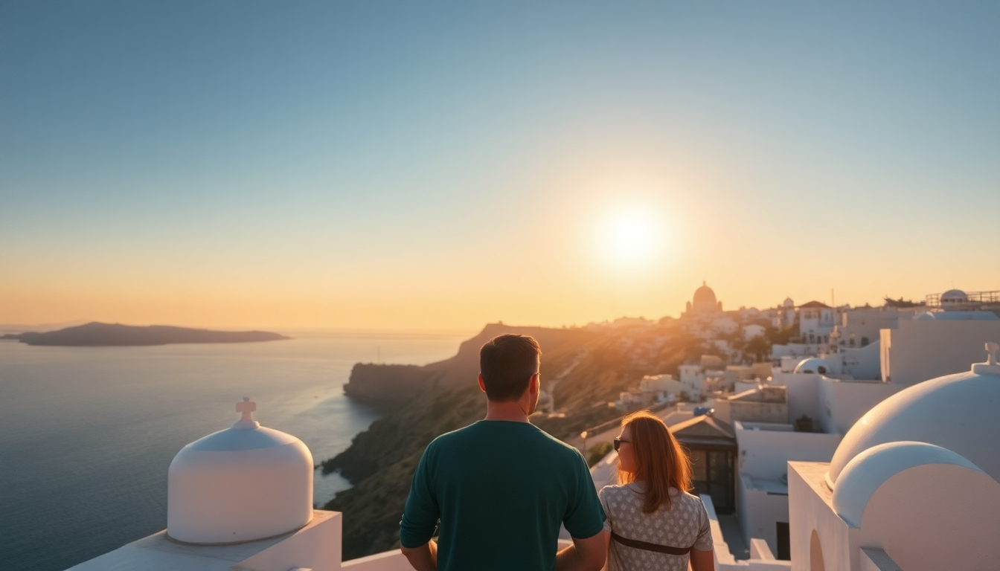

10-Day Greece Itinerary: Athens, Santorini, Mykonos & Crete

I just got back from a 10-day sprint through Greece—Athens, Santorini, Mykonos, and Crete—and I’ll be honest: it’s tight but doable if you move fast and skip the filler. Here’s exactly what worked, what didn’t, and where I’d reroute if I did it again.
Why start in Athens for the first two days?
You land in Athens, and you’ve got jet lag anyway. Two days is enough to hit the big stuff without burning out. Day one: walk the Plaka neighborhood early (before 9 AM, when the crowds hit), then tackle the Acropolis by 8 AM. Buy your tickets online—skip the line at the ticket booth. Afternoon: Acropolis Museum (air-conditioned, excellent exhibits). Dinner at Mani Mani on the pedestrian street—their moussaka is the best I had on the trip.
Day two: National Archaeological Museum in the morning (the Antikythera mechanism alone is worth it). Then walk through Monastiraki Flea Market—it’s touristy, but grab a souvlaki at O Thanasis for 4 euros. Evening: rooftop drink at A for Athens hotel bar, overlooking the Acropolis lit up. Skip the Plaka restaurants at night—they’re overpriced and mediocre.
Is it worth doing Santorini in only two days?
Yes, but only if you stay in Fira or Imerovigli—not Oia. Oia is a zoo at sunset and hotels there cost double. We booked a room at Hotel Keti in Imerovigli (quiet, infinity pool, caldera view for half the Oia price). Day one: ferry from Athens (Ferryhopper app, book Seajets high-speed—4.5 hours, not 8). Arrive, drop bags, walk the Fira to Oia coastal path (3 hours, stunning, start at 4 PM to catch sunset near Oia without the crowd).
Day two: morning at Red Beach (get there by 8:30 AM before the tour boats arrive). Afternoon: wine tasting at Vassaltis Vineyard—their Assyrtiko is crisp, and the view over the caldera beats any crowded sunset spot. Skip the donkey ride in Fira—it’s cruel to the animals and smells terrible.
What’s the honest take on Mykonos?
Mykonos is overrated, but I’d still do one night for the photos. The Little Venice area is beautiful for a sunset drink at Veranda bar—but a single cocktail costs 18 euros. The Windmills are a five-minute photo stop. Beaches are crowded and windy; Paradise Beach is a party scene, Agios Sostis is quieter but harder to reach.
We stayed at Rochari Hotel in Mykonos Town—basic but clean, 10-minute walk to the bus station. Ferry from Santorini to Mykonos is 2 hours on Hellenic Seaways. One day is enough: walk the town, eat at Kostas Taverna (real Greek food, not tourist menus), and leave. I’d honestly cut Mykonos to one night and add that day to Crete.
How do you fit Crete into four days without rushing?
Crete is huge, so pick one region. We did Chania (west) for three nights, then drove to Heraklion for the last day. Fly from Mykonos to Chania (40 minutes, Sky Express) instead of the 6-hour ferry. Day one: land, rent a car from Europcar at the airport, check into Casa Delfino Hotel in Chania’s Old Town. Walk the Venetian harbor at sunset, dinner at Tamam (lamb with yogurt, 12 euros).
Day two: drive to Elafonisi Beach (1.5 hours). Pink sand, shallow water, worth the drive. Get there by 9 AM to claim a spot. Pack your own lunch—the beach cafe is expensive and meh. Afternoon: Balos Lagoon is too crowded for my taste, so we skipped it. Instead, we hiked the Samaria Gorge on day three—start at 6 AM, finish by 2 PM, then drive to Heraklion.
Day four in Heraklion: Knossos Palace in the morning (arrive at 8 AM, leave by 10:30 before the bus tours). The site is more reconstructed ruins than original—manage expectations. Lunch at Peskesi (farm-to-table, try the dakos salad). Fly home from Heraklion Airport.
What are the best ferry and flight logistics for this itinerary?
Ferries are the backbone here, but don’t wing it. Book Seajets or Hellenic Seaways at least two weeks ahead—summer sells out. Route: Athens (Piraeus port) to Santorini (Athinios port)—4.5 hours, 60 euros. Santorini to Mykonos (new port)—2 hours, 45 euros. Mykonos to Crete (Heraklion port)—2.5 hours by high-speed, but we flew instead. Crete back to Athens is a 45-minute flight on Aegean Airlines—book that early too.
Ferry tip: sit on the upper deck for fresh air, bring a hoodie (air conditioning is arctic), and buy a snack at the port kiosk—onboard food is overpriced and sad.
When is the best time to do this itinerary?
May or September. June through August is hot (35°C+ in Athens), crowded, and expensive. We went in late May—crowds were manageable, sea was swimmable (20°C), and hotel prices in Santorini dropped 30% compared to July. If you go in September, the water is warmer but ferries get choppy. Avoid Easter week—everything shuts down for Orthodox Easter.
Where should you eat and stay without blowing your budget?
- Athens: Stay at Hotel Artemide in the Kolonaki neighborhood—quiet, rooftop bar, 120 euros/night. Eat at Ta Karamanlidika tou Fani for cured meats and cheese plates.
- Santorini: Hotel Keti in Imerovigli, 180 euros/night. Mama’s House in Fira for cheap gyros (4 euros).
- Mykonos: Rochari Hotel, 100 euros/night. Kostas Taverna for grilled octopus (10 euros).
- Crete: Casa Delfino in Chania, 140 euros/night. To Stachi for lamb with artichokes.
FAQ
How much does this 10-day trip cost? Roughly 1,800-2,200 euros per person including flights (from Europe), ferries, mid-range hotels, meals, and entry fees. Add 300 euros for car rental in Crete. Cash is still king in small tavernas—ATMs are everywhere but charge 3-5 euros per withdrawal.
Do I need a visa for Greece? If you’re from the US, Canada, UK, Australia, or EU, no visa for stays under 90 days. Your passport needs to be valid for at least three months beyond your departure date. Non-EU citizens should check ETIAS (coming in 2025).
Is this itinerary doable with kids? Tough but possible. Skip the Samaria Gorge (too long for young kids). The ferries are fine—book a cabin for the 4.5-hour Athens-Santorini leg. Elafonisi Beach is shallow and safe for toddlers. Strollers are a nightmare on Santorini’s cobblestone paths—bring a baby carrier.
Conclusion
- Start in Athens for two days, hit the Acropolis at 8 AM and eat at local spots like Mani Mani.
- Santorini works in two days if you stay in Imerovigli, walk the coastal path, and skip Oia’s sunset crowds.
- Mykonos is a one-night stop for photos and a meal at Kostas Taverna—don’t overplan it.
- Crete needs four days: base in Chania, drive to Elafonisi and Samaria Gorge, then see Knossos Palace early.
- Book ferries and flights two weeks ahead, travel in May or September, and always carry cash for small tavernas.